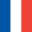

BoardGame Reference Hub
플레이 중 자주 확인하는 카드, 타일 정보를 빠르게 찾아가는 레퍼런스 허브입니다.
BoardGame Wiki - BGW is a multilingual board game reference hub. 보드게임 위키와 보드게임 레퍼런스 자료를 한국어, English, Deutsch, Français, 日本語, Español로 제공합니다. Search terms: Board Game Reference, Brettspiel Referenz, référence jeux de société, ボードゲームリファレンス, referencia juegos de mesa.